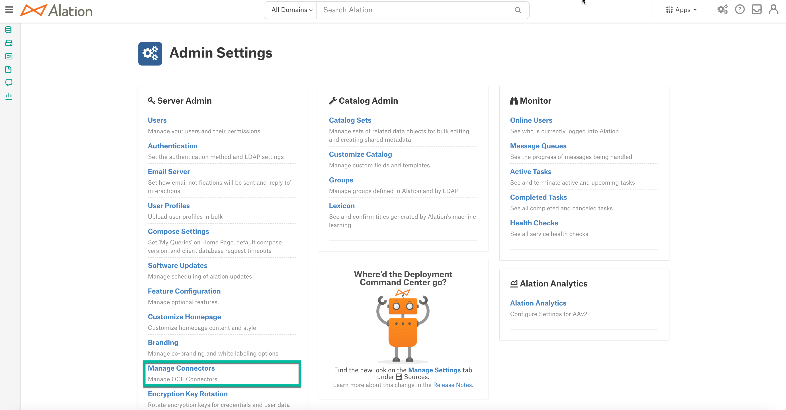
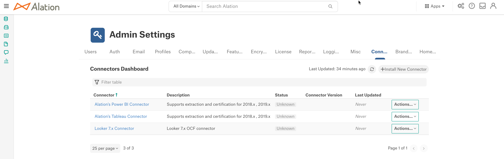
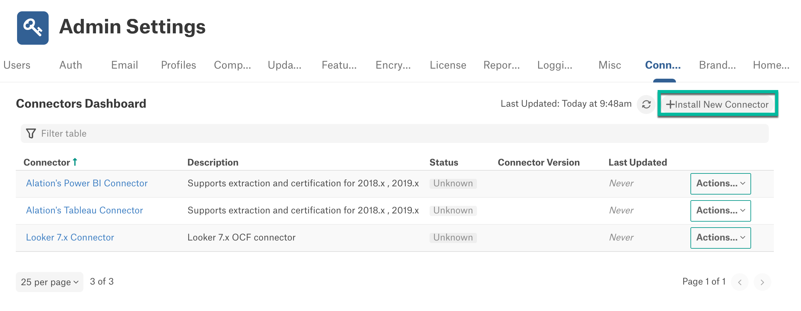
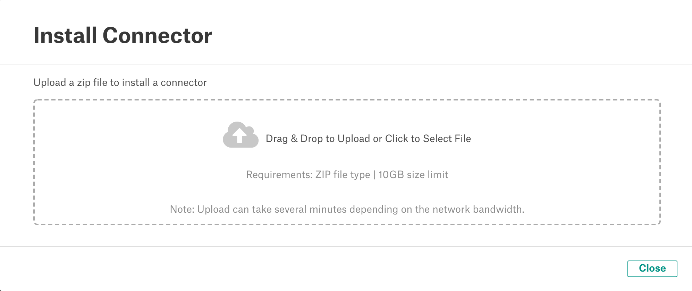
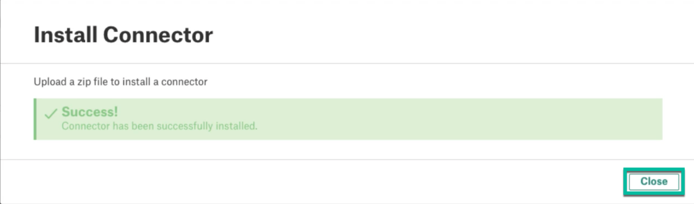
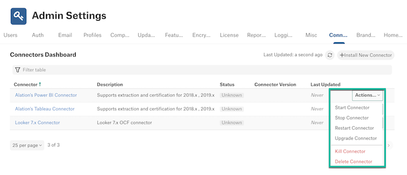
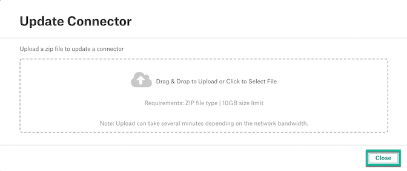
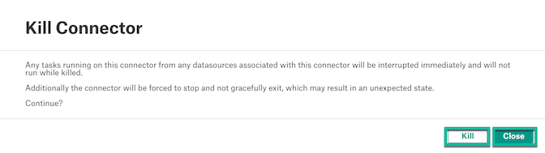
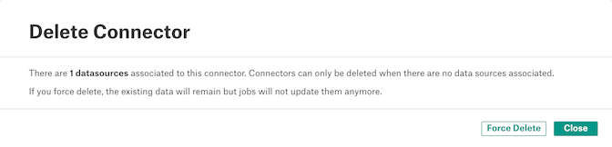
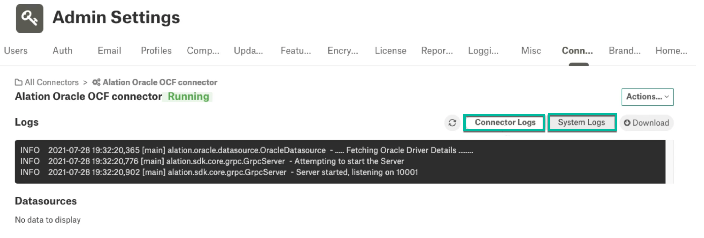

Manage Connectors¶
Alation Cloud Service Applies to Alation Cloud Service instances of Alation
Customer Managed Applies to customer-managed instances of Alation
The Manage Connectors page displays the list of OCF Connectors installed on the Alation server. The Connectors Dashboard is a one stop place for Server Admin users to install and manage OCF Connectors. This page can be accessed from Admin Settings > Server Admin > Manage Connectors.

Users can find the following information on the Connectors Dashboard:
Connector Name
Description of the connector
Status
Connector Version
Last Updated
This information is retrieved from the corresponding Connector container and manifest file.

Install an OCF Connector¶
Requirements¶
To install an OCF Connector from the OCF Connector Dashboard the following requirements must be met:
Make sure that Alation Connector Manager is installed. For information about installing Alation Connector Manager, refer to Install Alation Connector Manager.
Make sure you have the OCF Connector Zip file on your machine.
For installing BI Connectors, make sure that the below two alation_conf parameters are set to true:
alation.feature_flags.enable_gbm_v2_connector_strategy alation.feature_flags.enable_lineage_v2
Install an OCF Connector¶
Perform the following steps to install an OCF Connector:
Click the Install New Connector button on the Connectors Dashboard page.

Drag and drop or select the OCF Connector Zip file.

Once the installation is complete, Alation will display a success message. Click Close to close the modal window. The installed OCF connector will be displayed on the Connector Dashboard page.

Actions¶
Click the Actions button to view the list of actions available for an installed OCF Connector:
Start Connector¶
If the connector container is currently stopped, the action will start it up again.
Stop Connector¶
If the connector container is currently running, this action shuts it down.
Restart Connector¶
If the connector container is currently running, this action shuts it down, then starts it up again.
Upgrade Connector¶
This action will let you update the connector to a newer version. You can request a newer connector version from Alation Support.
Select Upgrade Connector from the connector’s Actions menu. The Update Connector dialog appears.
Drag and drop the connector Zip file into the designated area, or click in the area to select the file from your system.
Note
The installation may take several minutes. When it’s done, a success message will appear.
Once the upgrade is complete, click Close.
Note
You can also downgrade the connector version using the Upgrade Connector action. To downgrade, drag and drop or select the downgrade version Zip file.
Note
Make sure that you use the same connector type for upgrade or downgrade.
Kill Connector¶
This action forcefully stops a connector. Killing a connector will interrupt running tasks on any data sources associated with the connector. Click the Kill button to confirm the kill or click the Close button to abort the kill operation.
Delete Connector¶
This action deletes a connector. If there are no data sources associated with the connector, click the Delete button to confirm the deletion.
If there are any data sources associated with the connector, click the Force Delete button to force delete the connector or click the Close button to abort the delete operation.
After a force delete operation:
The connector will be deleted.
The existing data of the data source will remain in Alation.
You will not be able to perform any action on the data.
Logs¶
The log information for connectors is available in the OCF Admin Dashboard. Click a Connector Name to view the logs for this connector.
The default view is Connector Logs. You can switch between Connector Logs and System Logs. Connector Logs are retrieved from the connector.log file, and System Logs are retrieved from the ocf.log file. Both log files are stored in the /opt/alation/site/logs folder on the Alation server (path inside the Alation shell). The Logs area displays 7 days or 1,000 lines of logs.
The logs can be downloaded from the OCF Admin Dashboard and they are encrypted. Send the logs to Alation support for the resolution of the issue.

Troubleshooting¶
Unknown Connector Status¶
On the Manage Connectors dashboard, you may see one or more connectors with the status Unknown. The status Unknown appears for connectors if the Connector Manager is unreachable by the Alation server.
For connectors with the Unknown status, the lifecycle operations will not work from the Manage Connectors dashboard.
To troubleshoot the Unknown status for a connector, make sure that the Connector Manager is properly set up and can be reached by Alation:
On the Alation server, run an alation_ypireti command to make sure the Alation frontend can reach the Connector Manager. For example, try listing currently installed connectors (List OCF Connectors and Their Properties):
alation_ypireti listThis command should return a list of all currently installed connectors and demonstrate that Alation can communicate with the Connector Manager.
Check the log file ypireti.log in /opt/alation/site/logs (path inside the Alation shell) for any explicit error messages. Errors from ypireti.log are verbose enough and include enough instructions on how to debug and resolve an issue.
Check if the Connector Manager configuration is correct: STEP 3: Configure Alation Connector Manager.
If your Alation application has been recently updated to a newer version, make sure that the Connector Manager has also been updated. If the Connector Manager version requires an update, the version mismatch between Alation and Connector Manager will also result in the Unknown status of the OCF connectors on the Manage Connectors dashboard.
If none of the troubleshooting tips listed above helped to identify the problem, contact Alation Support.
Failure during Installation, Upgrade, Delete, Start, Stop, and Restart¶
If an error occurs in the course of a connector management action, the corresponding error message will be displayed in the Log viewer area in the Alation UI. However, in some cases the error message will tell you to explore the ypireti.log file.
This log file is located in the standard Alation log location and is also downloadable from the Logging tab of the Admin section.
This log file will contain the normal output that you would get from running an alation_ypireti command on the command line. Errors from the ypireti client and Alation Connector Manager are verbose enough and include enough instructions on what has gone wrong for the issue to be debugged and resolved.
Missing Connector Logs¶
On the details page for a connector, you may find that there are no Connector logs. The cause for this error is similar to the “status Unknown” error when reaching Alation Connector Manager.
Perform the steps in Unknown Connector Status to solve this issue.